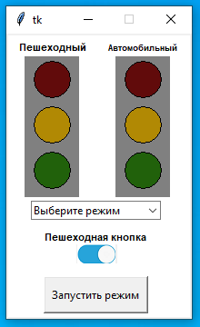
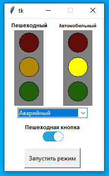
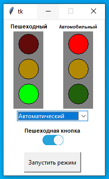
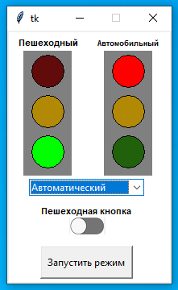
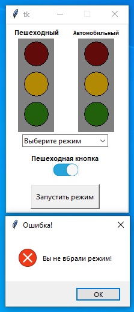

Интерфейсная часть системы контроля управления пешеходным переходом
Alex-Alen Pugatsov (TA-21V)

Visual Studio Code
Visual Studio Code — редактор исходного кода, разработанный Microsoft для Windows, Linux и macOS. Позиционируется как «лёгкий» редактор кода для кроссплатформенной разработки веб- и облачных приложений. Использовался для написания кода.
Домашнее задание
На языке Python с библиотекой Tkinter создать интерфейсную
часть системы контроля управляемым пешеходным переходом
(два светофора и кнопка запроса перехода)
На языке Python с библиотекой Tkinter создать интерфейсную часть системы контроля управляемым пешеходным переходом (два светофора и кнопка запроса перехода)
Снимки задания





Код программы
import tkinter
from tkinter import *
from tkinter import ttk
from tkinter import messagebox
root = Tk()
canvas = Canvas(root, width=200, height=310, background="white")
canvas.pack()
root.resizable(False, False)
def create_circle(x, y, r, canvas, color): # center coordinates, radius
x0 = x - r
y0 = y - r
x1 = x + r
y1 = y + r
return canvas.create_oval(x0, y0, x1, y1, fill=color)
# Traffic Light Colors
red_off = '#610B0B'
yellow_off = '#B18904'
green_off = '#21610B'
def traffic_red(on):
if on == "on":
return create_circle(150, 50, 20, canvas, 'red')
else:
return create_circle(50, 50, 20, canvas, '#610B0B')
def traffic_yellow(on):
if on == "on":
return create_circle(150, 100, 20, canvas, 'yellow')
else:
return create_circle(150, 100, 20, canvas, '#B18904')
def traffic_green(on):
if on == "on":
return create_circle(50, 150, 20, canvas, '#00ff00')
else:
return create_circle(150, 50, 20, canvas, '#610B0B') and create_circle(50, 150, 20, canvas, '#21610B')
# First Traffic Light
ramka = [
20, 25,
80, 25,
80, 180,
20, 180
]
canvas.create_polygon(ramka, fill='grey')
create_circle(50, 50, 20, canvas, red_off)
create_circle(50, 100, 20, canvas, yellow_off)
create_circle(50, 150, 20, canvas, green_off)
# Second Traffic Light
ramka = [
20 + 100, 25,
80 + 100, 25,
80 + 100, 180,
20 + 100, 180
]
canvas.create_polygon(ramka, fill='grey')
create_circle(50 * 3, 50, 20, canvas, red_off)
create_circle(50 * 3, 100, 20, canvas, yellow_off)
create_circle(50 * 3, 150, 20, canvas, green_off)
# Text For traffic lights
canvas.create_text(51, 15, text="Пешеходный", fill="black", font='Helvetica 8 bold')
canvas.create_text(150, 15, text="Автомобильный", fill="black", font='Helvetica 7 bold')
def helloCallBack():
if c.get() == "Выберите режим":
setattr(b, 'state', 'disabled')
messagebox.showerror("Ошибка!", "Вы не вбрали режим!")
if c.get() == "Аварийный":
traffic_green('off')
traffic_red('off')
traffic_yellow('on')
if c.get() == "Автоматический":
traffic_yellow('off')
traffic_red('on')
traffic_green('on')
l = ["Аварийный", "Автоматический"]
c = ttk.Combobox(root, values=l, state='readonly')
c.set("Выберите режим")
c.pack(padx=20, pady=20)
c.place(x=27, y=184)
b = tkinter.Button(canvas, text="Запустить режим", command=helloCallBack, height=2, width=15, state='active')
b.place(x=41, y=267)
canvas.create_text(98, 224, text="Пешеходная кнопка", fill="black", font='Helvetica 8 bold')
is_on = True
def switch():
global is_on
if is_on:
on_button.config(image = off)
is_on = False
else:
on_button.config(image = on)
is_on = True
on = PhotoImage(file = "on.png")
off = PhotoImage(file = "off.png")
on_button = Button(root, image = on, bd = 0, command = switch, height=19, width=43)
on_button.pack()
on_button.place(x=77, y=232)
canvas.pack()
root.mainloop()